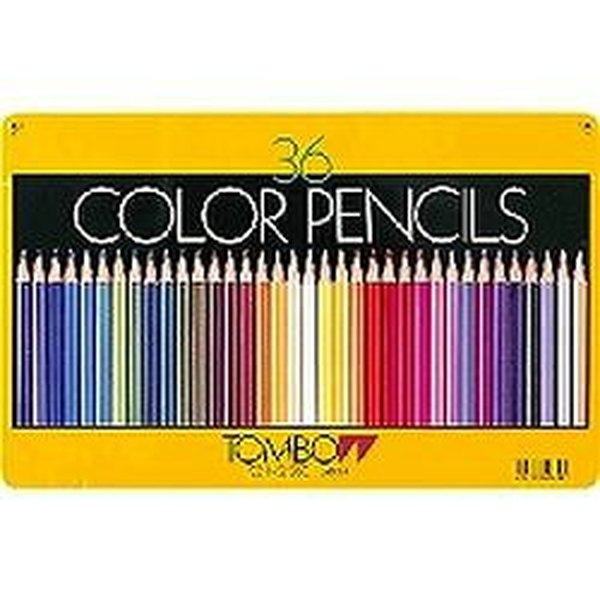
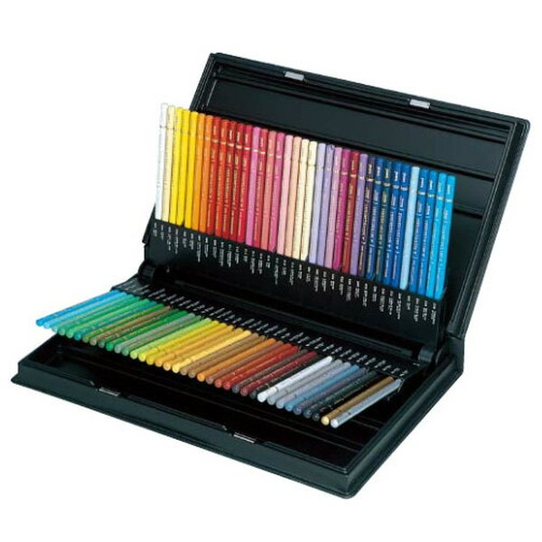
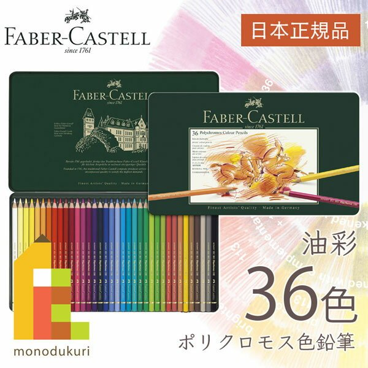
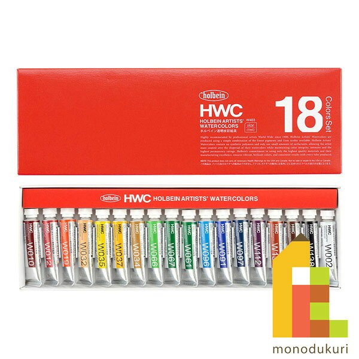
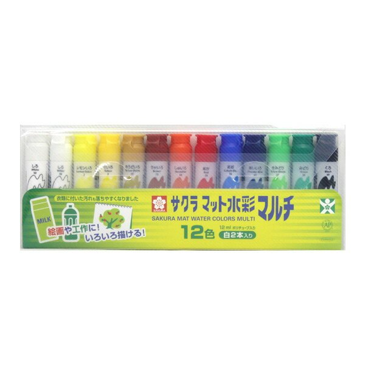
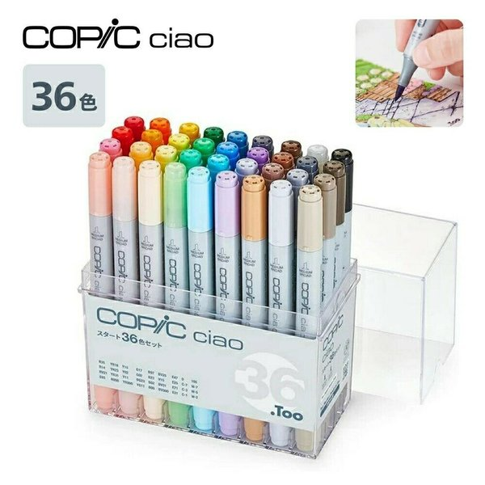
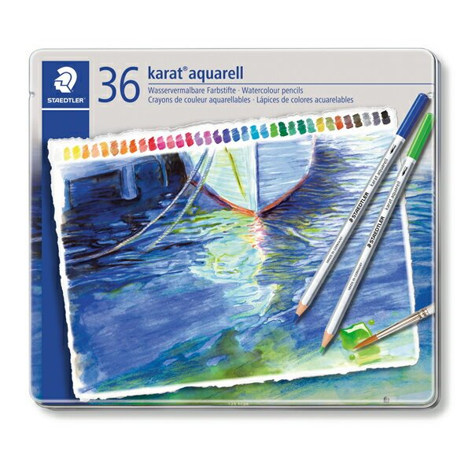
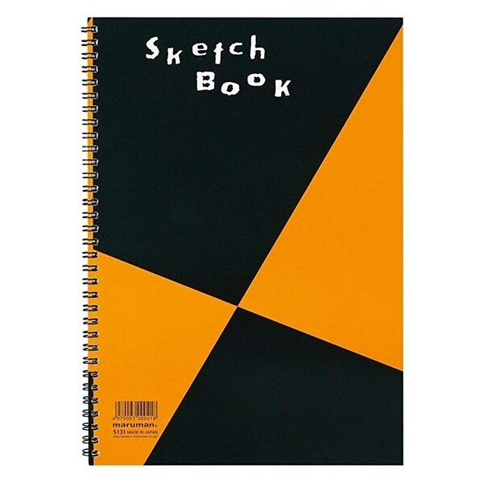
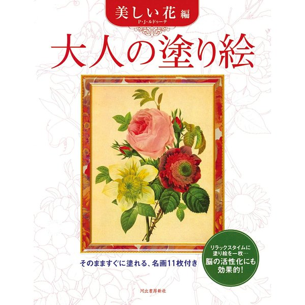
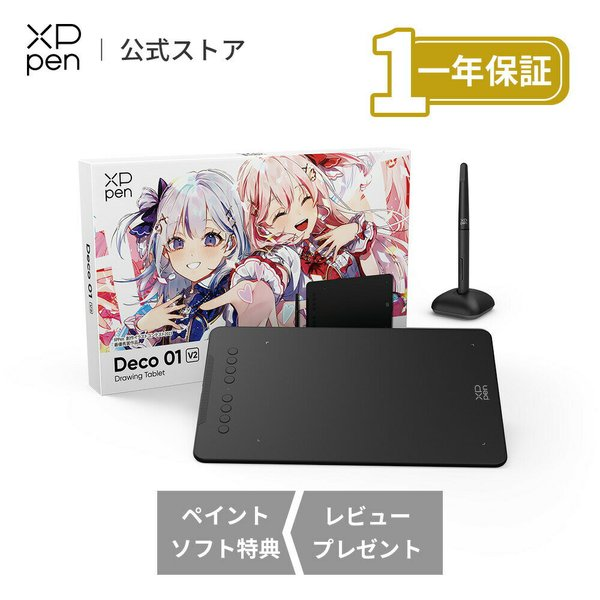

【2026年・お絵描き＆水彩画材10選】トンボ鉛筆 色鉛筆36色・三菱鉛筆 ユニカラー72色・ファーバーカステル ポリクロモス36色・ホルベイン 透明水彩18色・サクラクレパス マット水彩・コピック チャオ36色・ステッドラー カラトアクェレル・マルマン スケッチブックA4・大人の塗り絵 美しい花編・XP-Pen Deco01 V2を実売価格で比較
お絵描きは、道具が1つ増えるだけで描ける幅が変わります。色鉛筆1セットから始めても、水彩絵具とスケッチブックが加わると、塗り方の選択肢が一気に広がります。
選ぶ軸は3つです。まず何で塗るか。色鉛筆は乾いたまま重ねられ、水彩は水で薄めて滲ませられます。次に何に描くか。スケッチブックの紙は厚みで水の量が変わり、水彩なら厚口、色鉛筆なら並口で足ります。最後に仕上げの道具。ペンタブは紙を使わずに描けて、塗り直しがききます。
本記事では、楽天市場で人気・高評価のお絵描き・水彩画材10選を、実売価格とレビュー評価つきで写真付き紹介します。
- おすすめ10選 スペック・特徴比較表
- BEST 1｜トンボ鉛筆 缶入色鉛筆 36色 NQ CB-NQ36C
- BEST 2｜三菱鉛筆 色鉛筆 ユニカラー 72色セット UC72C
- BEST 3｜ファーバーカステル ポリクロモス色鉛筆 36色 110036
- BEST 4｜ホルベイン 透明水彩絵具 5ml 18色セット W403
- BEST 5｜サクラクレパス サクラマット水彩マルチ 12色13本入り
- BEST 6｜コピック チャオ スタート 36色セット 12503046
- BEST 7｜ステッドラー カラト アクェレル 水彩色鉛筆 36色 125M36
- BEST 8｜マルマン スケッチブック 図案シリーズ A4 画用紙並口 S131
- BEST 9｜大人の塗り絵 美しい花編 P・J・ルドゥーテ原画
- BEST 10｜XP-Pen ペンタブレット Deco01 V2
- 【読者負担0円】買わなくても得する無料サービス
- まとめ：お絵描き・水彩画材10選の選び方
| 順位 | 商品名 | ブランド | 最大の特徴・おすすめ理由 | 総合評価 |
|---|---|---|---|---|
| BEST 1 | トンボ鉛筆 缶入色鉛筆 36色 NQ CB-NQ36C | トンボ鉛筆（Tombow Pencil） | 36色を缶ケースごと保管できる | 4.66 |
| BEST 2 | 三菱鉛筆 色鉛筆 ユニカラー 72色セット UC72C | 三菱鉛筆（uni） | 72色で色の選択肢が多い | 4.79 |
| BEST 3 | ファーバーカステル ポリクロモス色鉛筆 36色 110036 | ファーバーカステル（Faber-Castell） | 重ねても色が濁りにくい | 4.84 |
| BEST 4 | ホルベイン 透明水彩絵具 5ml 18色セット W403 | ホルベイン（HOLBEIN） | 18色で混色の幅が出る | 4.80 |
| BEST 5 | サクラクレパス サクラマット水彩マルチ 12色13本入り | サクラクレパス（SAKURA） | 白が2本入っていて混色しやすい | 4.85 |
| BEST 6 | コピック チャオ スタート 36色セット 12503046 | コピック（Copic / Too） | 36色でイラストの配色が決まる | 4.77 |
| BEST 7 | ステッドラー カラト アクェレル 水彩色鉛筆 36色 125M36 | ステッドラー（STAEDTLER） | 水で溶かして水彩のように使える | 4.95 |
| BEST 8 | マルマン スケッチブック 図案シリーズ A4 画用紙並口 S131 | マルマン（maruman） | A4で持ち歩きやすい | 4.62 |
| BEST 9 | 大人の塗り絵 美しい花編 P・J・ルドゥーテ原画 | 河出書房新社 | 原画が美しく仕上がりが良い | 4.57 |
| BEST 10 | XP-Pen ペンタブレット Deco01 V2 | XP-Pen | 電池不要のペンで描ける | 4.35 |
トンボ鉛筆 缶入色鉛筆 36色 NQ CB-NQ36C

トンボ鉛筆のNQシリーズの油性色鉛筆36色セットです。缶のケースに入っていて、使い終わったら色を戻すだけです。軸が太めで芯も折れにくく、塗り絵の面を塗りつぶす場面でも力を入れやすい色鉛筆です。楽天市場での実売価格は約1,857円（2026年11月時点）。
- 36色を缶ケースごと保管できる
- 軸が太めで折れにくい
- 単色を買い足して補充できる
- 缶のふたが薄いので、持ち運ぶときは輪ゴムかケースが要る
三菱鉛筆 色鉛筆 ユニカラー 72色セット UC72C

三菱鉛筆のユニカラーは、細い線を描くのに向いた硬めの芯を持つ色鉛筆です。72色あるので、混色で作る中間色の幅が広がります。デッサンの陰影を重ねる場面でも、芯が減りにくく線が安定します。楽天市場での実売価格は約7,920円（2026年11月時点）。
- 72色で色の選択肢が多い
- 硬めの芯で細部を描きやすい
- ケース入りで色番が見やすい
- 芯が硬いぶん、広い面を塗ると薄く重ねる必要がある
ファーバーカステル ポリクロモス色鉛筆 36色 110036

ファーバーカステルのポリクロモスは、油性色鉛筆の中でも顔料の比率が高く、重ねたときに下の色が濁りにくいのが特徴です。缶入りの36色セットで、絵の具のように混色しながら陰影を作れます。楽天市場での実売価格は約9,150円（2026年11月時点）。
- 重ねても色が濁りにくい
- 缶入りで保管しやすい
- 芯が太く面を塗りやすい
- 芯が柔らかいので、先を細く削ると折れやすい
ホルベイン 透明水彩絵具 5ml 18色セット W403

ホルベインの透明水彩絵具の18色セットです。5mlのチューブで、18色あれば混色でほとんどの色を作れます。透明感があり、重ねたときの下の色の透け方がきれいに出ます。楽天市場での実売価格は約3,950円（2026年11月時点）。
- 18色で混色の幅が出る
- 5mlチューブで乾きにくい
- 日本製で粒子が細かい
- チューブのふたを閉め忘れると乾いて固まる
サクラクレパス サクラマット水彩マルチ 12色13本入り

サクラクレパスの水彩絵具セットです。12色に白が1本追加された13本入りで、白を混ぜて淡い色を作る使い方がしやすい構成です。乾くとマットな質感になり、ポスターのような平らな塗りに向いています。楽天市場での実売価格は約1,320円（2026年11月時点）。
- 白が2本入っていて混色しやすい
- 乾くとマットな質感になる
- 12mlのチューブでたっぷり使える
- 透明感を生かす塗り方より、不透明な塗りに向く絵具
コピック チャオ スタート 36色セット 12503046

コピックチャオの36色セットです。筆タイプと太い面の両方のペン先があり、線を描いてから面を塗るイラスト作業を1本でこなせます。インクを足せるので、よく使う色だけ補充して長く使えます。楽天市場での実売価格は約10,690円（2026年11月時点）。
- 36色でイラストの配色が決まる
- 筆と太面の2wayペン先
- インクを補充して長く使える
- アルコールインクなので、下の紙が薄いと裏に染みる
ステッドラー カラト アクェレル 水彩色鉛筆 36色 125M36

ステッドラーのカラトアクェレルの水彩色鉛筆36色セットです。描いたあとに水を含ませた筆でなぞると、色が溶けて水彩のように広がります。芯が柔らかく、紙の上を滑るように色がのります。楽天市場での実売価格は約5,940円（2026年11月時点）。
- 水で溶かして水彩のように使える
- 36色で下描きから仕上げまで
- 芯が柔らかく色がのりやすい
- レビューが19件と50件未満なので、色の出方は実際に描いて確かめたい。水を多く含ませると紙が波打つ
マルマン スケッチブック 図案シリーズ A4 画用紙並口 S131

マルマンの図案シリーズのスケッチブックです。A4サイズの画用紙並口で、鉛筆や色鉛筆の走りが軽い紙です。表紙が硬めなので、机がなくても膝の上で描けます。楽天市場での実売価格は約506円（2026年11月時点）。
- A4で持ち歩きやすい
- 鉛筆の線がのりやすい紙
- 表紙が硬く下敷きなしでも描ける
- レビューが13件と50件未満なので、紙の厚みは実物で確かめたい。水彩でたっぷり水を使うと紙が波打つ
大人の塗り絵 美しい花編 P・J・ルドゥーテ原画

ルドゥーテの花の絵を下絵にした大人の塗り絵です。線が細かく描かれているので、色鉛筆の先を使う練習になります。同じ花を何枚も塗ると、色の重ね方の違いが見えてきます。楽天市場での実売価格は約1,199円（2026年11月時点）。
- 原画が美しく仕上がりが良い
- 線が細かく集中して塗れる
- 1冊で何時間も遊べる
- 線が細かいので、太い芯の色鉛筆だと塗り分けにくい
XP-Pen ペンタブレット Deco01 V2

XP-Penの板タブです。パソコンにつないでペンで描くと、画面のカーソルが動いて線が引けます。電池が要らないペンで、ペン先の交換部品も付いています。初めてのデジタル画に選びやすい価格帯です。楽天市場での実売価格は約5,930円（2026年11月時点）。
- 電池不要のペンで描ける
- 傾きを検知して線に強弱が出る
- 替え芯が付属している
- レビューが17件と50件未満なので、筆圧の感じ方は描いて確かめたい。画面を見ながら描く液タブと違い、手元と画面が離れる
この記事の商品を買う前に、まずは無料で得する選択肢をチェック。どれも登録・利用は0円で、無料期間中に解約すれば料金はかかりません。読みたい雑誌がある人、ポイントを貯めたい人、アンケートなら気軽という人、それぞれに合うものを選べます。
初回31日無料・無料期間中に解約すれば0円 → 楽天ポイントモール｜登録無料で毎日ポイ活
買い物なしでもポイントが貯まる無料サービス → 楽天インサイト｜アンケートに答えてポイント
登録無料・すきま時間のアンケートで貯まる → 楽天カード｜年会費永年無料
新規発行・年会費ずっと0円 →
4つのサービスの違いと使い分けは「出費0円で得する！買わずにポイントが貯まる無料サービス厳選4選」でまとめています。
💡 まとめ：お絵描き・水彩画材10選の選び方
お絵描きを始めるときは、塗る道具を1つ決めてから紙を選ぶと無駄がありません。塗り絵やイラストならトンボ鉛筆の色鉛筆36色か三菱鉛筆のユニカラー72色、重ねて陰影を作るならファーバーカステルのポリクロモス36色。水彩はホルベインの透明水彩18色かサクラクレパスのマット水彩13本、水彩のようにも色鉛筆のようにも使いたいならステッドラーのカラトアクェレル。キャラクターを塗るならコピックチャオ36色、紙はマルマンのスケッチブックA4、塗る題材は大人の塗り絵 美しい花編。デジタルに進むならXP-PenのDeco01 V2です。まず1つ買って描いてみて、物足りなくなったら次の道具を足す順番が、長く続けられます。
楽天市場では「5と0のつく日」や「お買い物マラソン」などのキャンペーンに合わせて購入すると、ポイント還元が最大化してお得に手に入ります。ぜひチェックしてみてくださいね。